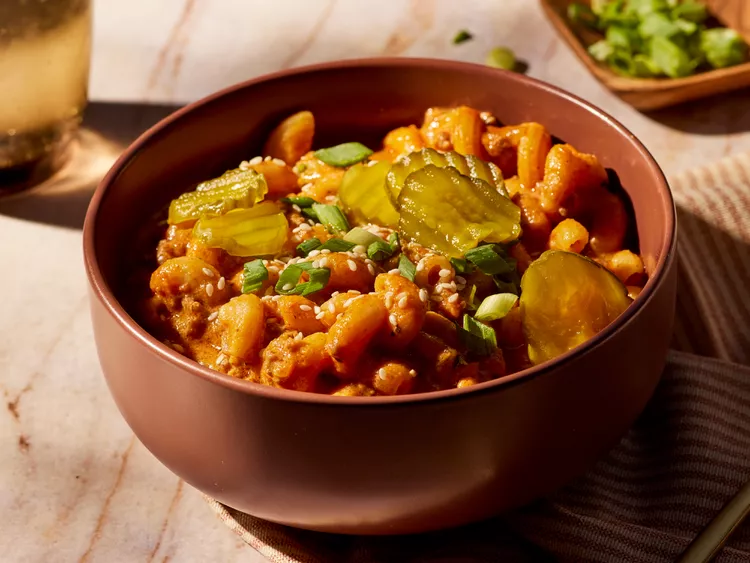

One-Pot Cheeseburger Pasta
Courtesy of Amanda Stanfield on Allrecipes

Description
This one-pot cheeseburger pasta is the perfect marriage between two delicious dishes rolled into one. Yellow mustard is the key ingredient adding the nostalgic cheeseburger flavor and the briny tang of the pickles take the dish to the next level!
Ingredients
- 1 lb. 80/20 ground beef
- 1 yellow onion, finely chopped
- 6 cloves garlic, minced
- 1/2 tsp. freshly ground black pepper
- 1 Tbsp. tomato paste
- 2 tsp. onion powder
- 1 1/2 tsp. smoked paprika
- 1 tsp. garlic powder
- 4 cups beef broth
- 1 15 oz. can of crushed tomatoes
- 1/4 cup drained hamburger dill pickle chips, finely chopped, plus more chips for garnish
- 3 Tbsp. yellow mustard
- 3 Tbsp. ketchup
- 8 oz. uncooked cavatappi pasta
- 1 oz. package shredded sharp Cheddar cheese
- 2 oz. cream cheese, cut into pieces
- toasted sesame seeds and sliced scallions
Steps
- Gather all Ingredients.
- Heat a large nonstick skillet over medium-high heat. Add beef, onion, garlic, salt, and black pepper, and cook, stirring occasionally, until
beef is no longer pink and onions are translucent, 6 to 8 minutes. Add tomato paste, onion powder, paprika, and garlic powder, and cook, stirring constantly, until tomato paste coats beef mixture, about 1 minute.
- Stir in broth, crushed tomatoes, pickles, mustard, and ketchup; bring to a boil over medium-high heat.
- Stir in pasta, making sure it is fully submerged in liquid. Cook over medium-high, stirring occasionally, until pasta is al dente, 8 to 10 minutes.
- Remove from heat and add Cheddar cheese and cream cheese, stirring constantly, until melted, about 2 minutes.
- Divide pasta among bowls and garnish with pickle chips, sesame seeds, and scallions.
Back to Recipe List